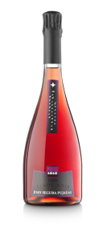
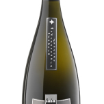

Cava rosat monovarietal 100% Pinot Noir, amb una criança mínima de 20 mesos en la cava. El vi base utilitzat va ser obtingut per el sistema de curta maceració en fred i sangrat sense pressió, obtenint un most d’altíssima qualitat i amb una elevada concentració d’aromes.
Cava de color vermell cirera, amb bombolla fina, alegre i continua. En la capa s’observen ribets blaus molt poc usuals en caves rosats amb criança. Al nas és fi, net i potent. Amb aromes a fruita, sobresortint els fruits vermells i els cítrics confitats. En la primera entrada en boca les bombolles llisquen suaus per el paladar. Bombolla neta i molt ben integrada, fresc. El retrogust ens recorda els aromes ja trobats al nas, cava llarg i persistent. En definitiva un cava complex, que el podem utilitzar per acompanyar qualsevol plat, senzill o elaborat.
Cava rosat copatge de les varietats 80% Garnatxa i 20% Monastrell, amb una criança mínima de 18 mesos en ampolla a la cava. El vi base utilitzat va ser obtingut pel sistema de curta maceració en fred i sangrat sense pressió; obtenint un most d’altíssima qualitat i concentració d’aromes.
Cava rosat de intensa i fina bombolla, on destaca la persistència de la blanca corona sobre el color vermell cirera del vi. Al nas sota el fi bombolleig del carbònic sobresurten les notes afruitades i fresques de fruits vermells, ressaltant inclús per sobre de les notes de criança més pròpies d’un cava reserva com aquest, i aportant així una frescor i joventut excepcional. En la boca les bombolles no esclaten, sinó que creen un coixí sota el paladar donant sensació de volum i gras. Un cava amb molta persistència i complexitat, molt adequat per menjar amb peixos guisats, mariscos, arrossos i tot tipus de plats de mar.
Cava copatge de les varietats 50% Xarel·lo, 30% Macabeu, 10% Pinot Noir i 10% Chardonnay, amb una criança mínima de 30 mesos en ampolla a la cava. El most utilitzat va ser obtingut ràpidament i treballat amb cura, per poder extreure i conservar els fins i afruitats aromes que desprès podrem trobar al degustar aquest cava.
Cava extremadament especial, tant per la composició com per els aromes que podem arribar a descobrir en ell. De intensa i fina bombolla, al nas sota el fi bombolleig del carbònic sobresurten les notes de criança, bolleria, pa torrat, tot barrejat amb tocs afruitats de poma al forn. En la boca les bombolles juguen entre la llengua i el paladar, aportant una sensació de frescor. Un cava molt persistent, amb una gran complexitat tant aromàtica com gustativa, que ens permet maridar amb un extens ventall de plats de la nostra rica gastronomia.
Cava copatge de les varietats 50% Xarel·lo, 30% Macabeu, 10% Parellada i 10% Chardonnay, amb una criança mínima de 18 mesos en ampolla a la cava. El most utilitzat va ser obtingut ràpidament i treballat amb cura, per a poder extreure i conservar els fins i afruitats aromes que desprès podrem trobar al degustar aquest cava.
Cava de intensa i fina bombolla. Al nas sota el fi bombolleig del carbònic sobresurten les notes de criança, barrejades amb tocs afruitats. En la boca les fines bombolles llisquen entre la llengua i el paladar, allargant la sensació de frescor. Un cava persistent, complex i molt estructurat, molt adequat per menjar plats contundents i elaborats, així com tota classe de mariscos, arrossos i plats de mar.